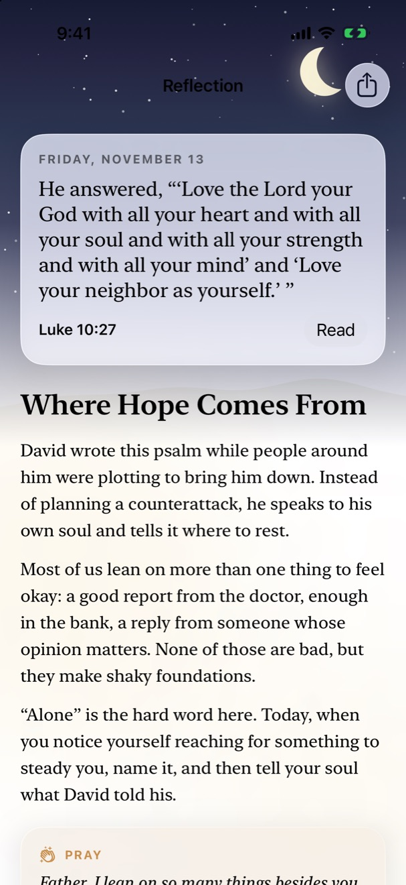
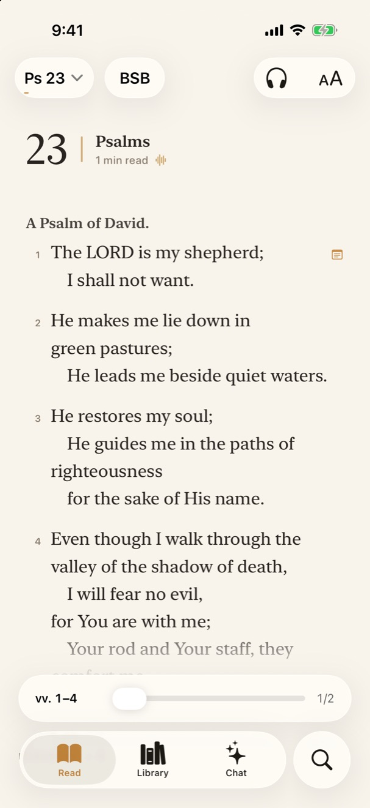
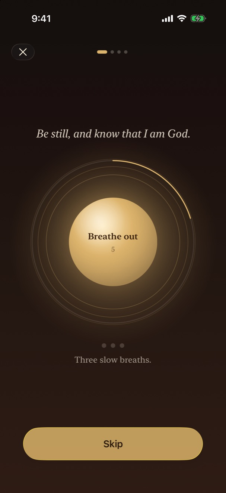
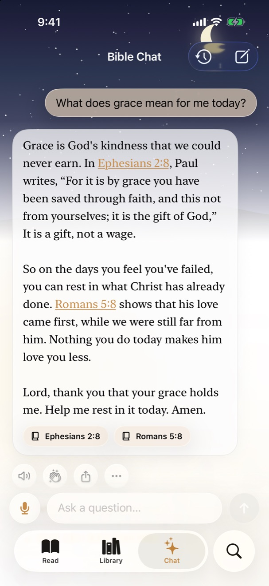
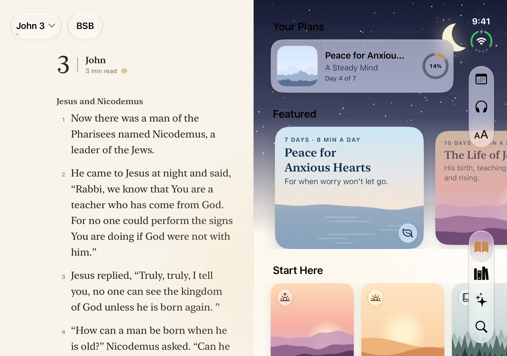

A quiet place to begin, every morning.
Open to a verse for the day, a short reflection and a prayer. Read slowly, listen while you walk, or sit for five quiet minutes.




Open it like a book. Fold it like one, too.
Unfolded, Be Still lays the Bible across both pages, with your plans, notes or Bible Chat open beside what you're reading. Folded, it becomes a leather Bible cover with today's verse.

- Two pages, one foldReading on the left, a companion page on the right, split cleanly at the hinge.
- Drag the foldGive either page the whole screen, then slide it back with the tab at the edge.
- A cover that greets youFolded shut, the outer screen is a Bible cover showing the verse of the day.
Everything for time with God, nothing in the way.
Verse of the Day
A verse for every day of the year, with its own on Christmas, Easter and the great days of the church year.
Today's Reflection
A short devotional, prayer and a thought to carry, checked against the Bible's own words.
Reading Plans
Guided plans for anxious hearts, grief, prayer and the life of Jesus, with a morning reminder if you'd like one.
Bible Chat
Ask about a passage, its history or your own life. It runs on your iPhone, so your questions never leave it.
Listen
Any chapter read aloud in natural voices, including recorded Bible readers.
Journal
Prayers, notes and highlights together, locked with Face ID if you choose.
Memorize
Hide the Word in your heart with gentle, spaced review.
Made for every screen
iPhone, iPad and the iPhone Duo, with widgets, Live Activities and a Bible-cover look when folded.
Your faith is personal. Be Still keeps it that way.
- No account, no adsOpen it and read. Nothing to sign up for, nothing selling your attention.
- On your iPhoneBible Chat and the daily reflection run on the device. Your questions and prayers aren't sent anywhere.
- Yours in iCloudNotes and plans sync through your own private iCloud, which we can't see. Read the privacy policy.
“Your word is a lamp to my feet and a light to my path.”Psalm 119:105